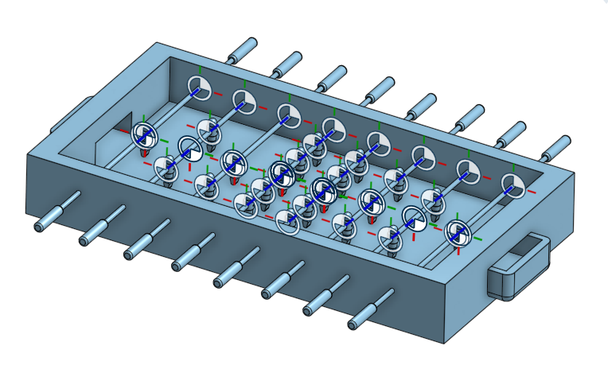
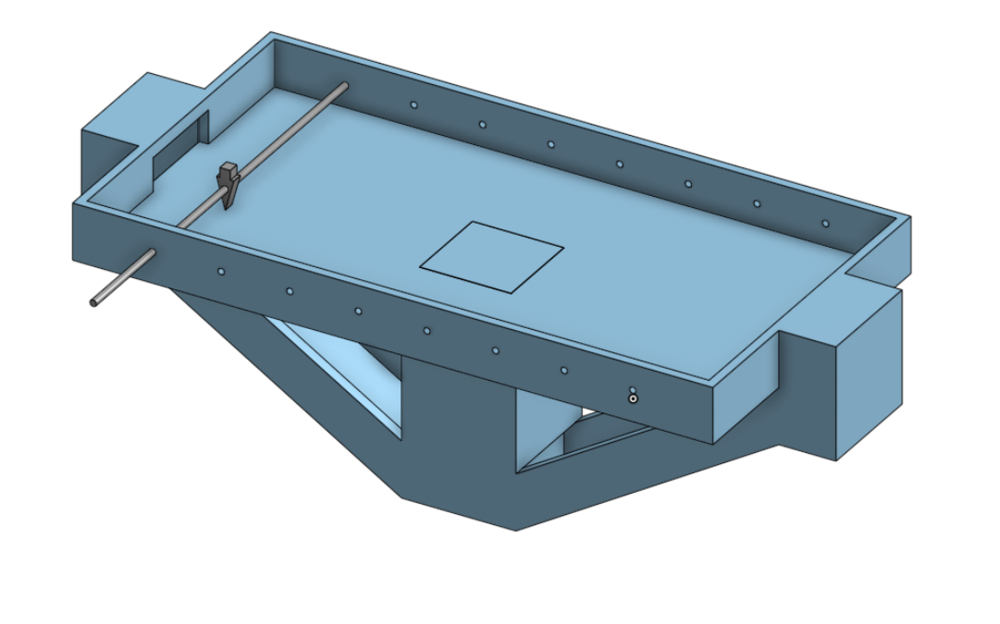
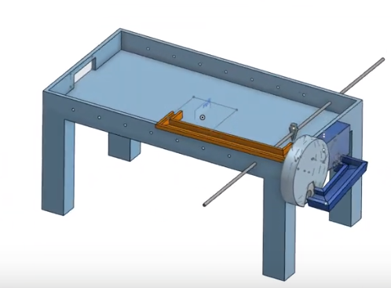
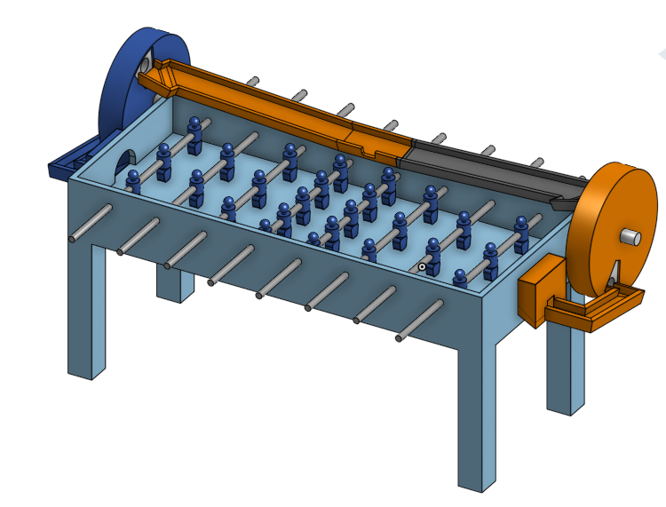
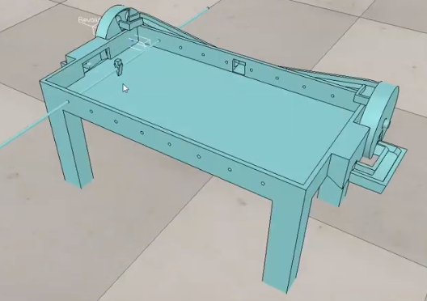
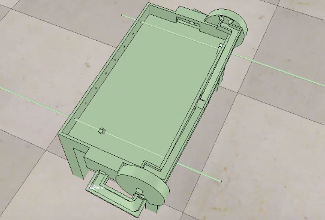
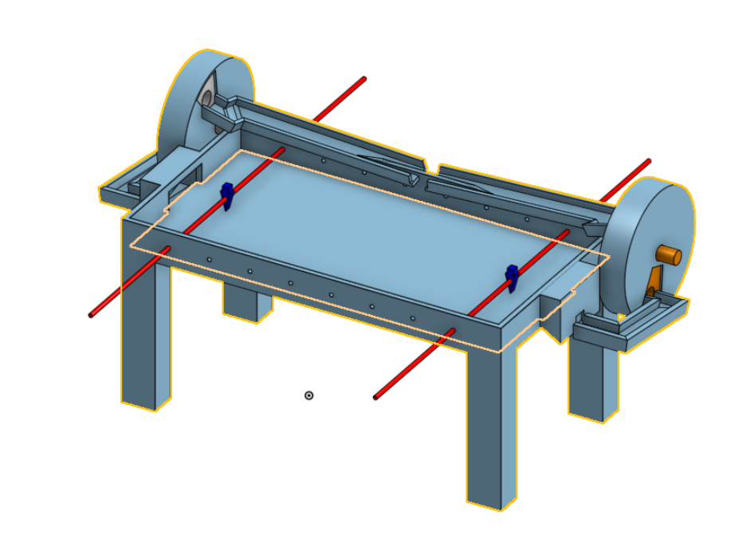

<!doctype html>
<html lang="en">
<head>
    <meta charset="utf-8">
<title>
2019 Spring 投影片
</title>
    <meta name="description" content="A framework for easily creating beautiful presentations using HTML">
    <meta name="author" content="Hakim El Hattab">
    
    <meta name="apple-mobile-web-app-capable" content="yes">
    <meta name="apple-mobile-web-app-status-bar-style" content="black-translucent">
    
    <meta name="viewport" content="width=device-width, initial-scale=1.0, maximum-scale=1.0, user-scalable=no">
    
    <link rel="stylesheet" href="css/reveal.css">
    <link rel="stylesheet" href="css/theme/black.css" id="theme">
    
    <!-- Theme used for syntax highlighting of code -->
    <link rel="stylesheet" href="lib/css/zenburn.css">

    <!-- Printing and PDF exports -->
    <script>
        var link = document.createElement( 'link' );
        link.rel = 'stylesheet';
        link.type = 'text/css';
        link.href = window.location.search.match( /print-pdf/gi ) ? 'css/print/pdf.css' : 'css/print/paper.css';
        document.getElementsByTagName( 'head' )[0].appendChild( link );
    </script>

    <!--[if lt IE 9]>
    <script src="lib/js/html5shiv.js"></script>
    <![endif]-->
</head>

<body>
<div class="reveal">
<!-- Any section element inside of this container is displayed as a slide -->
<div class="slides">
<section data-markdown>
    <script type="text/template">
## 2019 Spring 投影片

### 虎科大機械設計工程系

#### 協同產品設計實習期末投影片
<small>
Created by [40623110](https://github.com/40623110)
</small>

[分組網站](https://mdekmol.github.io/cd2019a-task1-2019cda_t1_g4/content/index.html)


    </script>
</section>


						
<section>
<section data-markdown>
    <script type="text/template">
<!-- 請注意, @others 不可以內縮 -->
## 大綱

* 手足球設計與Onshape迴球機構的繪製
* Vrep模擬
* 倉儲推送紀錄
* 在小組負責的內容
* 自評

    </script>
</section>


						
</section>

<section>
<section data-markdown>
    <script type="text/template">
<!-- 請注意, @others 不可以內縮 -->
## 手足球場的構想
### 一開始對於手足球桌的設計

[細部尺寸](https://mdekmol.github.io/cd2019a-task1-2019cda_t1_g4/content/%E9%9B%B6%E7%B5%84%E4%BB%B6%E5%B0%BA%E5%AF%B8%E5%88%86%E6%9E%90.html)




    </script>
</section>


						
<section data-markdown>
    <script type="text/template">
<!-- 請注意, @others 不可以內縮 -->
[第一次更改](https://www.youtube.com/watch?time_continue=1&v=7sOUTRGeuvc)

更改的原因:因為當初沒有考慮到迴球機構的關係。



    </script>
</section>


						
<section data-markdown>
    <script type="text/template">
<!-- 請注意, @others 不可以內縮 -->
[第二次更改](https://www.youtube.com/watch?v=O3kcxMwShjc)

更改原因:因為當初的軌道設計不良，導致球會卡在軌道中間，而沒辦法順利地降下來。




    </script>
</section>


						
<section data-markdown>
    <script type="text/template">
<!-- 請注意, @others 不可以內縮 -->
最終的球檯





    </script>
</section>


						
</section>

<section>
<section data-markdown>
    <script type="text/template">
<!-- 請注意, @others 不可以內縮 -->
### V-rep模擬

因為在二上的時候就做過了類似的模擬送球機構，故在送球機構上旋轉軸的安裝與碰撞都沒有出現什麼太大的問題，比較有問題的地方是球要進去送球機構的時候會卡卡的，但藉由調整球的大小或軌道的距離就能夠解決這些問題。


    </script>
</section>


						
<section data-markdown>
    <script type="text/template">
<!-- 請注意, @others 不可以內縮 -->
影片是從mesh開始到調整零件之間的從屬關係再到能夠讓球成功進入球場的影片。

[模擬影片](https://www.youtube.com/watch?v=2yTUUQN4M8g)



    </script>
</section>


						
<section data-markdown>
    <script type="text/template">
<!-- 請注意, @others 不可以內縮 -->
搭配程式 用按鍵操作手足球員

此影片已經可以進行雙人的手足球對打。
[模擬影片](https://www.youtube.com/watch?v=CfAQaw6XRGc&t)



    </script>
</section>


						
<section data-markdown>
    <script type="text/template">
<!-- 請注意, @others 不可以內縮 -->
最終球檯的模擬

經由組員的討論，所討論出的球檯的最終樣子。
[模擬影片](https://www.youtube.com/watch?v=7tYCtVdMncM)



    </script>
</section>


						
</section>

<section>
<section data-markdown>
    <script type="text/template">
<!-- 請注意, @others 不可以內縮 -->
### 倉儲推送紀錄

[甲班第四組](https://github.com/mdekmol/cd2019a-task1-2019cda_t1_g4/graphs/contributors)

    </script>
</section>


						
<section data-markdown>
    <script type="text/template">
<!-- 請注意, @others 不可以內縮 -->
### 在小組負責的內容

在剛分完期末報告的組別時，就已經將各種工作做好分工了，在小組裡我是負責迴球機構的設計與迴球機構的Onshape繪製以及迴球機構的V-rep模擬，包括了旋轉軸與零件的從屬關係的配置，以及零件與零件之間的碰撞與動力，在最後也與負責程式開發的同學進行協同，讓按鍵對打、人與電腦、電腦與電腦，能夠順利地進行。

    </script>
</section>


						
<section data-markdown>
    <script type="text/template">
<!-- 請注意, @others 不可以內縮 -->
### 自評

學員出席(20%) 18分

Github 倉儲管理(20%) 15分

Onshape 協同操作(20%) 15分

V-rep 模擬(20%) 20分

程式開發(20%) 0分

總分:68分

    </script>
</section>


						
</section>

<section data-markdown>
    <script type="text/template">
# 投影片快捷鍵

* 利用箭頭上下前後換頁
* 按 f 鍵進入全螢幕模式 (full screen)
* 按 s 鍵可以顯示投影片筆記 (show)
* 按 o 鍵可以切換單張或全域檢視 (overview)
* 按 b 或 . 鍵可以切換螢幕黑屏 (black)
* 按 Esc 可以退出全螢幕或全域檢視 (Escape)

    </script>
</section>


						
<section>
<section data-markdown>
    <script type="text/template">
<!-- 請注意, @others 不可以內縮 -->
# 數學符號與方程式

Inline math equations go in like so: $\omega = d\phi / dt$. Display
math should get its own line and be put in in double-dollarsigns:

$$I = \int \rho R^{2} dV$$
    </script>
</section>


						
<section data-markdown>
    <script type="text/template">
<!-- 請注意, @others 不可以內縮 -->
## 利用 Markdown 寫投影片
以下利用 Markdown 格式展示 Python 程式碼:
```
# use threading and subprocess to threading the make process
import os
import subprocess
import threading

def domake():
    
    path = "../exposed/api/exposed"
    ubuntu = "../Ubuntu"
    
    # create obj path
    
    if not os.path.exists(path+"/../obj"):
        os.makedirs(path+"/../obj")
    
    subprocess.call(["make", "clean"], cwd=path)
    subprocess.call("make", cwd=path)
    subprocess.call(["cp", "{libslvs.so, _slvs.so, slvs.py}", ubuntu], cwd=path)
    subprocess.call(["python3", "circle_ex.py"], cwd=path+"/"+ubuntu)
    
make = threading.Thread(target=domake)
make.start()
```
    </script>
</section>


						
<section data-markdown>
    <script type="text/template">
## 使用 iframe 導入影片

### 導入影片 template

<iframe src="https://player.vimeo.com/video/183950627" width="640" height="492" frameborder="0" webkitallowfullscreen mozallowfullscreen allowfullscreen></iframe>
    </script>
</section>


						
</section>

</div>

</div>

<script src="lib/js/head.min.js"></script>
<script src="js/reveal.js"></script>
<script>
        // More info https://github.com/hakimel/reveal.js#configuration
        Reveal.initialize({
            controls: true,
            progress: true,
            history: true,
            center: true,

            transition: 'slide', // none/fade/slide/convex/concave/zoom

            // More info https://github.com/hakimel/reveal.js#dependencies
            dependencies: [
                { src: 'lib/js/classList.js', condition: function() { return !document.body.classList; } },
                { src: 'plugin/markdown/marked.js', condition: function() { return !!document.querySelector( '[data-markdown]' ); } },
                { src: 'plugin/markdown/markdown.js', condition: function() { return !!document.querySelector( '[data-markdown]' ); } },
                { src: 'plugin/highlight/highlight.js', async: true, callback: function() { hljs.initHighlightingOnLoad(); } },
                { src: 'plugin/zoom-js/zoom.js', async: true },
                { src: 'plugin/notes/notes.js', async: true },
                { src: 'plugin/math/math.js', async: true }
            ]
        });
</script>
</body>

</html>

